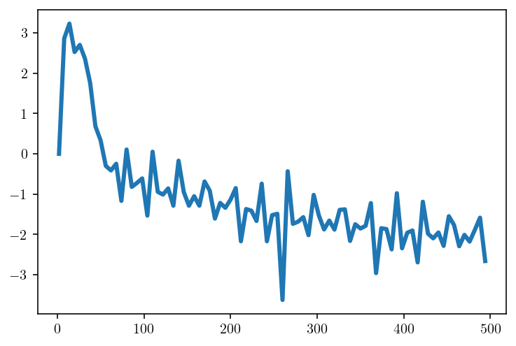
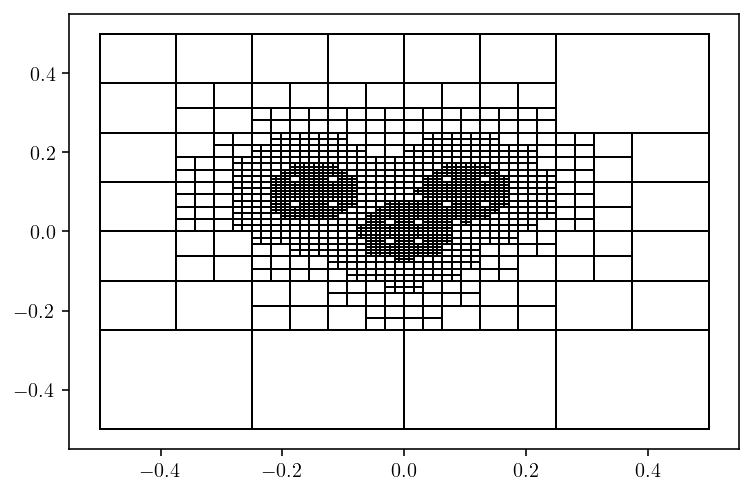

6. [DRAFT] A box code for volumetric integration¶
6.1. Next steps:¶
Cite the Ethridge and Greengard paper.
Build the singular integrals and do a single box test for those.
Do a nine box grid with singular integrals.
Split into nearfield and far-field.
6.2. Setup¶
import numpy as np
import matplotlib.pyplot as plt
import common
import sympy as sp
%config InlineBackend.figure_format='retina'
x, y = sp.symbols("x, y")
# sym_soln = 2 + x + y + x ** 2 + y * sp.cos(6 * x) + x * sp.sin(6 * y)
gaussian_centers = np.array([[0.1, 0.1], [0, 0], [-0.15, 0.1]])
alpha = 250
ethridge_sym_soln = 0
for i in range(3):
r2_i = (x - gaussian_centers[i, 0]) ** 2 + (y - gaussian_centers[i, 1]) ** 2
ethridge_sym_soln += sp.exp(-alpha * r2_i)
ethridge_sym_laplacian = sp.diff(sp.diff(ethridge_sym_soln, x), x) + sp.diff(
sp.diff(ethridge_sym_soln, y), y
)
ethridge_soln_fnc = sp.lambdify((x, y), ethridge_sym_soln, "numpy")
ethridge_laplacian_fnc = sp.lambdify((x, y), ethridge_sym_laplacian, "numpy")
def fundamental_soln_matrix(obs_pts, src_pts):
dx = obs_pts[:, None, 0] - src_pts[None, :, 0]
dy = obs_pts[:, None, 1] - src_pts[None, :, 1]
r2 = (dx ** 2) + (dy ** 2)
r = np.sqrt(r2)
G = (1.0 / (2 * np.pi)) * np.log(r)
return G[:, None, :]
6.3. Singular quadrature, poor convergence.¶
def run(obs_pt, nq):
q_vol, qw_vol = common.gauss_rule(nq)
qx_vol, qy_vol = np.meshgrid(q_vol, q_vol)
q2d_vol = np.array([qx_vol.flatten(), qy_vol.flatten()]).T.copy()
q2d_vol_wts = (qw_vol[:, None] * qw_vol[None, :]).flatten()
fxy = ethridge_laplacian_fnc(q2d_vol[:, 0], q2d_vol[:, 1])
u_particular = (
(fundamental_soln_matrix(obs_pt, q2d_vol) * q2d_vol_wts[None, None, :])
.dot(fxy)
.reshape(obs_pt.shape[0])
)
return u_particular
obs_pt = np.array([[-0.1, -0.1]])
correct = ethridge_soln_fnc(obs_pt[0, 0], obs_pt[0, 1])
steps = np.arange(2, 500, 6)
ests = np.array([run(obs_pt, s) for s in steps])
difference = np.linalg.norm(ests - correct, axis=1) / np.linalg.norm(correct)
plt.plot(steps, np.log10(difference))
plt.show()

6.4. Two-dimensional interpolation¶
import quadpy
def clencurt(n1):
"""Computes the Clenshaw Curtis quadrature nodes and weights"""
C = quadpy.c1.clenshaw_curtis(n1)
return (C.points, C.weights)
# TODO: is there a quadpy function that does tensor products?
def tensor_product(x, w):
rect_x, rect_y = np.meshgrid(x, x)
rect_pts = np.array([rect_x.flatten(), rect_y.flatten()]).T
rect_w = np.outer(w, w).flatten()
return rect_pts, rect_w
def clencurt_2d(n):
return tensor_product(*clencurt(n))
def cheblob(n):
"""Computes the chebyshev lobatto."""
pts = clencurt(n)[0]
wts = (-1) ** np.arange(n).astype(np.float64)
wts[0] *= 0.5
wts[-1] *= 0.5
return pts, wts # tensor_product(pts, wts)
eps = np.finfo(float).eps
def barycentric_tensor_product(evalx, evaly, interp_pts, interp_wts, fnc_vals):
"""
eval_pts is (N, 2)
interp_pts is (Q,)
interp_wts is (Q,)
fnc_vals is (P, Q^2)
"""
dx = evalx[:, None] - interp_pts
dy = evaly[:, None] - interp_pts
idx0, idx1 = np.where(dx == 0)
dx[idx0, idx1] = eps
idx0, idx1 = np.where(dy == 0)
dy[idx0, idx1] = eps
kernelX = interp_wts[None, :] / dx
kernelY = interp_wts[None, :] / dy
kernel = (kernelX[:, None, :] * kernelY[:, :, None]).reshape(
(-1, fnc_vals.shape[1])
)
return (
np.sum(kernel[None, :] * fnc_vals[:, None, :], axis=2)
/ np.sum(kernel, axis=1)[None, :]
)
nobs = 200
zoomx = np.array([-1, 1])
zoomy = np.array([-1, 1])
xs = np.linspace(*zoomx, nobs)
ys = np.linspace(*zoomy, nobs)
obsx, obsy = np.meshgrid(xs, ys)
obsx_flat = obsx.flatten()
obsy_flat = obsy.flatten()
nI = 90
Ix, Iwts = cheblob(nI)
Ipts, Iwts2d = tensor_product(Ix, Iwts)
F = ethridge_laplacian_fnc(Ipts[:, 0], Ipts[:, 1])
F_interp = barycentric_tensor_product(obsx_flat, obsy_flat, Ix, Iwts, np.array([F]))
F_interp2d = F_interp.reshape(obsx.shape)
F_correct = ethridge_laplacian_fnc(obsx_flat, obsy_flat).reshape(obsx.shape)
plt.figure(figsize=(8.5,8.5))
plt.subplot(2,2,1)
levels = np.linspace(np.min(F_correct), np.max(F_correct), 7)
cntf = plt.contourf(
Ipts[:, 0].reshape((nI, nI)),
Ipts[:, 1].reshape((nI, nI)),
F.reshape((nI, nI)),
levels=levels,
extend="both",
)
plt.contour(
Ipts[:, 0].reshape((nI, nI)),
Ipts[:, 1].reshape((nI, nI)),
F.reshape((nI, nI)),
colors="k",
linestyles="-",
linewidths=0.5,
levels=levels,
extend="both",
)
plt.plot(Ipts[:,0], Ipts[:,1], 'ro', markersize=0.5)
plt.colorbar(cntf)
plt.xlim(zoomx)
plt.ylim(zoomy)
plt.subplot(2,2,2)
levels = np.linspace(np.min(F_correct), np.max(F_correct), 7)
cntf = plt.contourf(obsx, obsy, F_interp2d, levels=levels, extend="both")
plt.contour(
obsx,
obsy,
F_interp2d,
colors="k",
linestyles="-",
linewidths=0.5,
levels=levels,
extend="both",
)
plt.colorbar(cntf)
plt.xlim(zoomx)
plt.ylim(zoomy)
plt.subplot(2,2,3)
levels = np.linspace(np.min(F_correct), np.max(F_correct), 7)
cntf = plt.contourf(obsx, obsy, F_correct, levels=levels, extend="both")
plt.contour(
obsx,
obsy,
F_correct,
colors="k",
linestyles="-",
linewidths=0.5,
levels=levels,
extend="both",
)
plt.colorbar(cntf)
plt.xlim(zoomx)
plt.ylim(zoomy)
plt.subplot(2, 2, 4)
levels = np.linspace(-5, 1, 7)
err = np.log10(np.abs(F_correct - F_interp2d)) / np.log10(np.mean(np.abs(F_interp2d)))
cntf = plt.contourf(obsx, obsy, err, levels=levels, extend="both")
plt.contour(
obsx,
obsy,
err,
colors="k",
linestyles="-",
linewidths=0.5,
levels=levels,
extend="both",
)
plt.colorbar(cntf)
plt.xlim(zoomx)
plt.ylim(zoomy)
plt.show()

6.5. A box code¶
6.5.1. TODO: Restrict adjacency sizes¶
6.5.2. TODO: Compute a set of leaves to do integration much faster?¶
q1 = clencurt_2d(4)
q2 = clencurt_2d(7)
interp1 = cheblob(4)
interp2 = cheblob(7)
import matplotlib.patches as patches
from typing import List
from dataclasses import dataclass
@dataclass()
class TreeLevel:
fhigh: np.ndarray
centers: np.ndarray
sizes: np.ndarray
parents: np.ndarray
is_leaf: np.ndarray
@dataclass()
class Tree:
levels: List[TreeLevel]
leaves: TreeLevel
def build_box_tree(f, start_centers, start_sizes, max_levels, tol):
parents = np.zeros(start_centers.shape[0])
centers = start_centers
sizes = start_sizes
levels = []
for i in range(max_levels):
box_low_pts = q1[0][None, :] * 0.5 * sizes[:, None, :] + centers[:, None, :]
box_high_pts = q2[0][None, :] * 0.5 * sizes[:, None, :] + centers[:, None, :]
box_quad_wts = q2[1][None, :] * 0.25 * sizes[:, 0, None] * sizes[:, 1, None]
f_high = f(
box_high_pts[:, :, 0].ravel(), box_high_pts[:, :, 1].ravel()
).reshape((box_low_pts.shape[0], interp2[0].shape[0], interp2[0].shape[0]))
# Because the Chebyshev Lobatto/Clenshaw Curtis points are nested, a 2N - 1 point
# rule contains an N point rule inside it.
f_low = f_high[:, ::2, ::2]
f_high_flat = f_high.reshape((centers.shape[0], -1))
f_low_flat = f_low.reshape((centers.shape[0], -1))
# Interpolate to get an error estimate. Note that this error estimate will be
# very conservative because it's estimating the error in the N low accuracy points
# but we will end up using the 2N - 1 high accuracy points.
f_high_interp = barycentric_tensor_product(
q2[0][:, 0], q2[0][:, 1], interp1[0], interp1[1], f_low_flat
)
err = np.linalg.norm(f_high_interp - f_high_flat, axis=1)
# Don't refine if we're at the last level.
if i == max_levels - 1:
refine_boxes = np.array([], dtype=np.int64)
else:
refine_boxes = np.where(err > tol)[0]
is_leaf = np.ones(centers.shape[0], dtype=bool)
is_leaf[refine_boxes] = False
levels.append(TreeLevel(f_high_flat, centers, sizes, parents, is_leaf))
if refine_boxes.shape[0] == 0:
break
refine_centers = centers[refine_boxes]
bump = sizes[refine_boxes] / 4
parents = np.repeat(np.arange(centers.shape[0])[refine_boxes], 4)
centers = np.concatenate(
[
refine_centers + np.array([bump[:, 0], bump[:, 1]]).T,
refine_centers + np.array([-bump[:, 0], bump[:, 1]]).T,
refine_centers + np.array([bump[:, 0], -bump[:, 1]]).T,
refine_centers + np.array([-bump[:, 0], -bump[:, 1]]).T,
]
)
sizes = np.repeat(sizes[refine_boxes] / 2, 4, axis=0)
leaves = []
for i in range(len(levels)):
L = levels[i]
leaves.append((L.fhigh[L.is_leaf], L.centers[L.is_leaf], L.sizes[L.is_leaf], L.parents[L.is_leaf]))
leaf_data = [
np.concatenate([L[i] for L in leaves])
for i in range(4)
]
leaves = TreeLevel(*leaf_data, np.ones(leaf_data[0].shape[0], dtype=bool))
return Tree(levels=levels, leaves=leaves)
%%time
tree = build_box_tree(ethridge_laplacian_fnc, np.array([[0, 0]]), np.array([[1, 1]]), 10, 0.1)
CPU times: user 22.3 ms, sys: 2.23 ms, total: 24.5 ms
Wall time: 24.2 ms
tree.leaves.centers.shape
(1441, 2)
for i in range(tree.leaves.centers.shape[0]):
c = tree.leaves.centers[i]
s = tree.leaves.sizes[i]
plt.gca().add_patch(
patches.Rectangle(
(c[0] - s[0] / 2, c[1] - s[1] / 2),
s[0],
s[1],
edgecolor="k",
facecolor="none",
)
)
plt.xlim([-0.55, 0.55])
plt.ylim([-0.55, 0.55])
plt.show()

box_high_pts = (
q2[0][None, :] * 0.5 * tree.leaves.sizes[:, None, :] + tree.leaves.centers[:, None, :]
)
box_quad_wts = (
q2[1][None, :] * 0.25 * tree.leaves.sizes[:, 0, None] * tree.leaves.sizes[:, 1, None]
)
S = np.sum(box_quad_wts.ravel() * tree.leaves.fhigh.ravel())
S
-6.359146398349225e-07
6.6. Volumetric Green’s function integrals¶
obs_test = np.array([[-0.10, -0.10]])
G = (
fundamental_soln_matrix(obs_test, box_high_pts.reshape((-1, 2)))[:, 0, :]
* box_quad_wts.ravel()[None, :]
)
S = G.dot(tree.leaves.fhigh.ravel())[0]
S
0.006751526169057331
correct = ethridge_soln_fnc(obs_test[0,0], obs_test[0,1])
S, correct, np.linalg.norm(S - correct) / np.linalg.norm(correct)
(0.006751526169057331, 0.006762249891498413, 0.0015858216737248344)